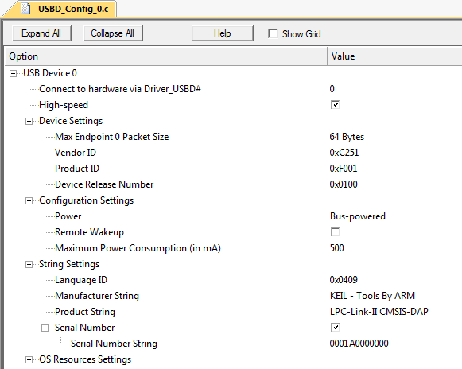

|
CMSIS-DAP
Interface Firmware for CoreSight Debug Access Port
|

|
|
CMSIS-DAP
Interface Firmware for CoreSight Debug Access Port
|
|
The CMSIS-DAP firmware implements the CMSIS-DAP concept. The firmware is provided in a source code in CMSIS-DAP GitHub repository with several reference implementations for popular debug units. The table below explains the directory structure.
| Folders and Files | Description |
|---|---|
| 📂 Firmware | Folder with CMSIS-DAP Firmware. |
| ┣ 📄 Config/DAP_config.h | CMSIS-DAP firmware configuration file. See Configuring I/O ports and debug unit. |
| ┣ 📂 Examples | CMSIS-DAP firmware adapted to various debug units. See Example implementations. |
| ┣ 📂 Include | CMSIS-DAP firmware header file. |
| ┣ 📂 Source | CMSIS-DAP firmware source code. |
| ┣ 📂 Template | Interface templates for Keil MDK-Middleware. |
| ┗ 📂 Validation | Validation project. See Validate the debug unit operation. |
The implementation is composed of the following components:
The CMSIS-DAP firmware is designed for debug units that fulfill the following hardware requirements:
The figure below illustrates the hardware interfaces of a CMSIS-DAP debug adapter.
Reference implementations of CMSIS-DAP firmware are provided as source code with complete project files and may be used as a starting point for the firmware adapatation to a new debug unit. Following examples are provided:
| Folders and Files | Description |
|---|---|
| 📂 Firmware/Examples | Folder with example CMSIS-DAP firmware projects. |
| ┣ 📂 LPC-Link2 | CMSIS-DAP firmware adapted to the NXP LPC-Link2 debug unit. |
| ┗ 📂 MCU-LINK | CMSIS-DAP firmware adapted to the NXP MCU-LINK debug unit. |
In these examples the Keil MDK-Middleware USB stack is used. However, it is possible to use alternative USB stacks as well.
To create CMSIS-DAP firmware that can be used on a different debug unit copy an existing firmware adaptation to a new folder. For example, copy the folder Firmware/Examples/MCU-LINK to a folder called /Firmware/MyDebugUnit.
Following steps describe the adaptation of the CMSIS-DAP firmware to a new debug unit:
The CMSIS-DAP firmware is designed to execute on a debug unit that is using a Cortex-M processor-based microcontroller.
The following steps describe how to change the target microcontroller in the custom CMSIS-DAP firmware project:
Firmware/MyDebugUnit/CMSIS_DAP.uvprojx.In Keil MDK, changing the microcontroller adds relevant software components for the new target. However, depending on the availability you may need to replace some components with custom implementations.
The CMSIS-DAP firmware configuration file DAP_config.h provides the interface functions and configuration parameters for the hardware of the CMSIS-DAP debug unit. Refer to CMSIS-DAP Firmware Configuration for detailed descriptions of available configuration options.
Optionally, you may add a CMSIS-Driver USART to interface to SWO.
A CMSIS-Driver USART can be used to capture the trace output on the SWO pin using a UART RX input on the microcontroller. UART Serial Wire Output (SWO) trace can be enabled and configured in the header DAP_config.h. SWO_UART is used to enable the UART SWO and SWO_UART_DRIVER is used to configure USART Driver instance number (Driver_USART#).
Refer to CMSIS-DAP Debug Unit Information for more information.
Optionally, you may add a CMSIS-Driver USART to interface to UART communication port.
A CMSIS-Driver USART can be used to receive data from the target and transmit data to the target using UART RX and TX pins on the microcontroller. The UART communication port can be enabled and configured in the header DAP_config.h. DAP_UART is used to enable the UART communication port and DAP_UART_DRIVER is used to configure USART Driver instance number (Driver_USART#).
Refer to CMSIS-DAP Debug Unit Information for more information.
CMSIS-DAP firmware communicates via USB with the host computer. The USB communication is implemented via Keil MDK-Middleware components that access the USB peripheral of the microcontroller.
The CMSIS-DAP v2 firmware uses USB bulk endpoints that provide high-speed communication. In addition, Communication Device Class is used to enable USB COM port.
For the USB interface it is important to provide correct configuration information for the USB peripheral as described in this section.
The following steps describe how to change and configure the USB peripheral in the CMSIS-DAP firmware project:
usb_config_0.c in the editor and select Configuration Wizard as edit mode; then change the following settings:Note
- The USB Device setting high-speed / full-speed USB must be reflected in the
DAP_config.hfile.- The String Settings - Product String must contain "CMSIS-DAP" somewhere in the string. This is used by the debuggers to identify a CMSIS-DAP compliant debug unit that is connected to a host computer.

CMSIS-DAP v2 uses USB bulk endpoints. Optionally, support for streaming SWO trace is provided via an additional USB endpoint.
This configuration requires custom class support with the interface setting:
0xFF (Vendor specific)0x000x00Note
- This interface enables also WebUSB technology that is used in web browsers to connect to a debug adapter connected to your PC.
Depending on the configuration, it uses the following USB endpoints which should be configured in the interface descriptor in this order:

Note
- These settings allow support in Windows (8 and above), Mac OS, and Linux without further drivers. Some additional settings are required to automatically install CMSIS-DAP enabled debug adapters in these operating systems.
Additional settings for Microsoft Windows
For automatic installation of a CMSIS-DAP v2 enabled debug adapter in Windows, use the following WinUSB GUID in the USB custom class:
The picture below shows the WinUSB GIUD configuration of the USB custom class:

Windows 8 and above does not require a WinUSB driver provided that the USB firmware stack supports Microsoft descriptors.
CMSIS-DAP v2 device should be configured as WCID (Windows Compatible ID) device which provides extra information to a Windows system to facilitate automated driver installation.
Also see Host OS Drivers for additional information.
CMSIS-DAP v2 supports also a UART communication port optionally routed to a USB COM port which is implemented by a USB Communication Device Class (CDC) device.
The picture below shows the configuration of the USB CDC class.
Once the CMSIS-DAP firmware is configured and built, it needs to be programmed into the Flash ROM of the new debug unit.
Keil MDK provides Flash algorithms for many Cortex-M based microcontrollers and therefore you may use the Flash programming facilities that are provide in µVision. Once Flash programming is configured, you may use the µVision menu item Flash - Download.